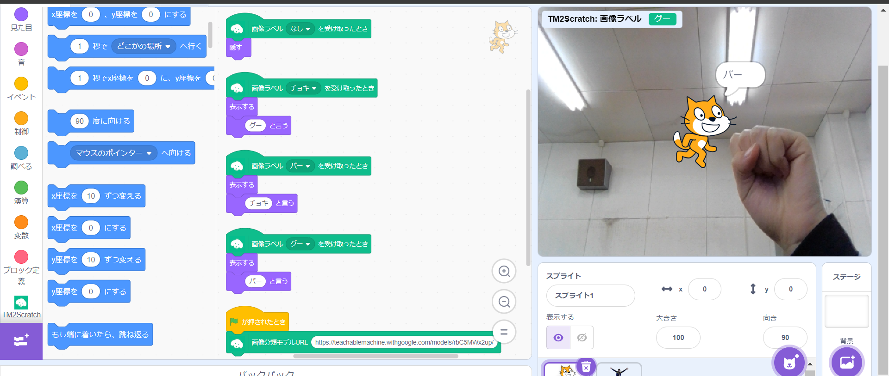
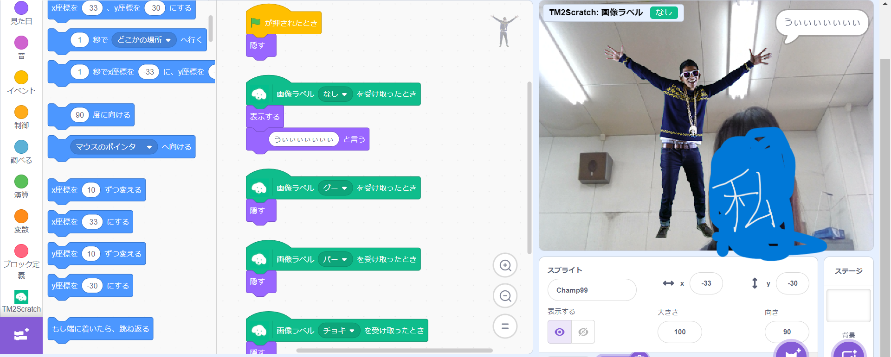

第2週目
2-1 2週目のレポートをHTMLで作る
1.内容
「概要説明」・機械学習の体験
・Coding体験：3次元空間での描画
・2週目のレポート作成方法
・VR体験：Workroomsを体験
2.感想
機械学習の体験ではポーズを様々な角度で写真を学習させて、そのポーズをとると読み取るのが面白かった。
また、VR体験では、コントローラーを持たなくても
手が現実の動きとリンクしていることに驚いた。
2-2 機械学習体験
1.内容
Teachable Machineを使って、画像を認識して区別するプロジェクトを作成した。各ポーズ50枚ほど写真を撮り、機械に学習させた。
このモデルをエクスポートしStretch3の拡張機能を使って、
じゃんけんにおいて最強の猫を作成した。
また、諦めて何も出さないと男に煽られるプログラムとなっている。
下の図は猫と男のプログラムである。

猫のプログラム

男のプログラム
2.感想
ポーズをとるとそれを認識して判別するなど、現代の技術は凄いと思った。また、今回作ったゲームのように機械学習させたものをほかのプログラムなどに応用できることが分かった。
2-3 VR（バーチャルリアリティー：Virtual Reality）会議室の体験
 VRの会議室
VRの会議室1.内容
VRのアバターで会議室に入り、机にあるボードに落書きをしたり席を移動したりした。2.感想
現実と同じように自由にポーズをとれたり、3Dで奥行きを感じれたりとVRの世界にのめり込むことができた。
また、VRの世界の中が、街並みなどかなりリアルに再現されていて感銘を受けた。